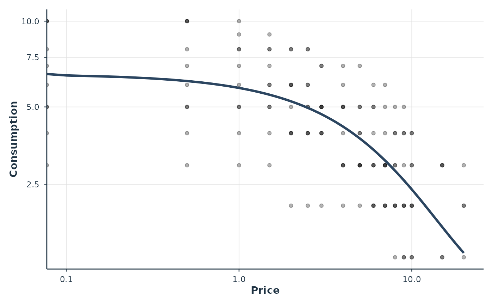

Fits nonlinear mixed-effects demand models using Template Model Builder (TMB)
for exact automatic differentiation and Laplace approximation. In practice
this converges on demand equations where the PNLS-based nlme::nlme()
fails (see Details).
Usage
fit_demand_tmb(
data,
y_var = "y",
x_var = "x",
id_var = "id",
equation = c("exponentiated", "exponential", "simplified", "zben"),
estimate_k = FALSE,
k = NULL,
random_effects = Q0 + alpha ~ 1,
covariance_structure = c("pdSymm", "pdDiag"),
factors = NULL,
factor_interaction = FALSE,
continuous_covariates = NULL,
collapse_levels = NULL,
start_values = NULL,
tmb_control = list(iter_max = 1000, eval_max = 2000),
multi_start = TRUE,
validate_subject_pars = TRUE,
verbose = 1,
...,
store_report_cov = FALSE
)Arguments
- data
A data frame in long format with columns for subject ID, price, and consumption.
- y_var
Character. Name of the consumption/response variable.
- x_var
Character. Name of the price variable.
- id_var
Character. Name of the subject identifier variable.
- equation
Character. The demand equation to fit. One of:
"exponentiated"Koffarnus et al. (2015). Gaussian on raw Q. Zeros allowed. Has k parameter.
"exponential"Hursh & Silberberg (2008). Gaussian on log(Q). Observations with Q = 0 are automatically dropped. Has k parameter.
"simplified"Simplified exponential (no k). Gaussian on raw Q. Zeros allowed.
"zben"Zero-bounded exponential (no k). Gaussian on LL4- transformed Q. User must pass LL4-transformed y_var. Note: Q0 on the log10 scale is clamped to a minimum of 0.001 to avoid a singularity at Q0 = 1 (where log10(Q0) = 0 causes division by zero in the decay rate). Subjects with estimated Q0 near 1 may have biased parameter estimates.
- estimate_k
Logical. If
FALSE(default), k is held fixed at the value given ink. IfTRUE, k is estimated as a free parameter; see Details for when the data support that. Only relevant for the "exponentiated" and "exponential" equations.- k
Numeric or
NULL. Fixed value of k whenestimate_k = FALSE.NULL(the default) means k = 2, the conventional value of Hursh & Silberberg (2008) and the default offit_demand_fixed().- random_effects
Specification of subject-level random effects. Accepts any of the following, in order of generality:
- formula (default)
Q0 + alpha ~ 1: random intercepts on both parameters (equivalent to the legacyc("q0", "alpha")shortcut).Q0 ~ 1limits REs to Q0. Formulas with a factor-expanded RHS (e.g.,Q0 + alpha ~ conditionorQ0 + alpha ~ condition - 1) are supported, giving each subject a random effect per factor level. The within-subject factor must vary within eachid; pure between-subject factors belong infactors, not in the RE formula.- continuous within-id covariate (random slope)
A numeric RHS term such as
Q0 + alpha ~ dose_cgives each subject a random slope on that covariate (dose-response demand). The covariate must vary withinidfor enough subjects and should be centered (and, for dose ladders, typicallylog10-transformed); see Details. Pair it withcontinuous_covariatesto also estimate the population (fixed) dose slope.nlme::pdMate.g.,
nlme::pdDiag(Q0 + alpha ~ 1)ornlme::pdSymm(Q0 + alpha ~ condition). Pre-constructed pdMat objects are accepted and their covariance class is honored (overridescovariance_structure).- list of
pdMat/nlme::pdBlocked Multi-block covariance structures like
list(pdSymm(Q0+alpha~1), pdDiag(Q0+alpha~cond-1))are fully supported.- character vector (deprecated)
c("q0", "alpha")or"q0". Soft-deprecated in 0.3.0; emits alifecycle::deprecate_soft()message. Translated internally to the formulaQ0 + alpha ~ 1orQ0 ~ 1.
- covariance_structure
"pdSymm"(default; unstructured) or"pdDiag"(diagonal). Applies only whenrandom_effectsis a formula; ignored for pre-constructed pdMat / list / pdBlocked inputs.- factors
Character vector of factor variable names for group comparisons.
- factor_interaction
Logical. If
TRUEand two factors provided, include their interaction.- continuous_covariates
Character vector of continuous covariate names entered as fixed (population) effects on Q0 and alpha. To also let the per-subject dose-response vary, add the same (centered) covariate as a random slope in
random_effects(e.g.Q0 + alpha ~ dose_c); the fixed and random parts are sourced separately and recovering the population dose slope requires both.- collapse_levels
Named list for asymmetric factor collapsing. Structure:
list(Q0 = list(factor = list(new = c(old))), alpha = list(...)).- start_values
Named list of starting values. If
NULL, data-driven defaults are used.- tmb_control
List of control parameters for the optimizer:
optimizerCharacter.
"nlminb"(default) or"L-BFGS-B". L-BFGS-B can sometimes recover where nlminb reports convergence code 1 with a"false convergence (8)"message (R'snlminb()reports only codes 0/1; the PORT status is inopt$message).rescueLogical (default
TRUE). When nlminb exits with false convergence, retry automatically: restart nlminb from the stalled point, then L-BFGS-B from it, and, for a fixed-kfit, warm-start from a free-krefit. A candidate is accepted only if it reports convergence code 0, its gradient satisfiesmax(abs(grad)) <= rescue_grad_tol, and its Hessian is positive definite; the lowest-NLL accepted candidate replaces the stalled result andfit$opt$rescued_from/fit$opt$rescue_methodrecord it. If no candidate qualifies the fit fails loudly as before. Seevignette("convergence-guide")for the worked example.rescue_grad_tolPositive number (default
1e-2): the maximum absolute gradient component a rescue candidate may have.iter_maxMaximum iterations (default 1000).
eval_maxMaximum function evaluations (default 2000). Only applies to nlminb; L-BFGS-B has no function evaluation limit.
rel_tolRelative convergence tolerance (default 1e-10). Only applies to nlminb.
lowerNamed numeric vector of lower bounds on optimizer-scale parameters (default NULL = no bounds). Names must match optimizer parameter names (e.g.,
log_k,beta_q0,logsigma_b). Note that most parameters are in log-space: e.g., to constrain k between 0.14 and 55, uselower = c(log_k = -2),upper = c(log_k = 4)(which bind only whenestimate_k = TRUE, since a fixed k is not a free parameter). A bound name applies to all occurrences of that parameter (e.g., both elements ofbeta_q0).upperNamed numeric vector of upper bounds (see
lower).warm_startNamed numeric vector of starting values in optimizer space (e.g., from a previous
fit$opt$par). When provided,multi_startis automatically disabled. This differs fromstart_values, which operates in parameter space beforeTMB::MakeADFun(). Length must match the number of free parameters.traceNon-negative integer controlling optimizer trace output (default 0). When not explicitly set, inherits from
verbose >= 2.
- multi_start
Logical. If
TRUE(default), try 3 starting value sets and select the best.- validate_subject_pars
Logical. If
TRUE(default), validate that every column of the fixed-effect design matrices is constant within eachidbefore computingsubject_pars. When a factor or continuous covariate varies within subject, Q0/alpha/Pmax/Omax are set toNA_real_for affected subjects and a warning names the offending columns. Set toFALSEto force row-order-dependent values (not recommended; prefer a factor-expanded random-effects formula instead).- verbose
Integer. Verbosity level: 0 = silent, 1 = progress, 2 = debug.
- ...
Additional arguments (currently unused).
- store_report_cov
Logical. Advanced storage control. When
FALSE(default), the full covariance matrix of all ADREPORT'd quantities ($sdr$cov) is not materialized, shrinking the saved fit substantially (often >80% on large datasets) with no loss of functionality: no method reads it. Standard errors,cov.fixed, variance components, and all inference are identical either way. SetTRUEonly if you need the full joint covariance of derived ADREPORT'd quantities.
Value
An object of class beezdemand_tmb containing:
- model
List with coefficients, se, variance_components
- subject_pars
Data frame of subject-specific Q0, alpha, Pmax, Omax
- tmb_obj
TMB objective function object
- opt
Optimization result (normalized across optimizers)
- sdr
TMB sdreport object. Its
$cov(full covariance of all ADREPORT'd quantities) is not materialized (a scalarNA) unlessstore_report_cov = TRUE.- converged
Logical convergence indicator
- loglik
Log-likelihood at convergence
- AIC
Akaike Information Criterion
- BIC
Bayesian Information Criterion
- data
Original data (after any filtering)
- param_info
List of model metadata
- formula_details
Design matrix and formula information
- collapse_info
Collapse levels information (if used)
Details
Traditional NLME approaches using nlme::nlme() universally fail for
demand equations because the PNLS algorithm with numerical finite-difference
gradients cannot navigate the likelihood surface. TMB succeeds using exact
automatic differentiation, Laplace approximation, and joint marginal
likelihood optimization.
Fixed versus estimated k. By default k is held at 2, the convention of
Hursh & Silberberg (2008) and the default of fit_demand_fixed(). It is
a convention rather than an estimate, so fits at a second value (say
k = 1.5 or k = 3) are worth reporting as a sensitivity check.
alpha and the derived Pmax / Omax / EV move most; Q0 enters the likelihood
jointly with alpha, so it can shift too.
Setting estimate_k = TRUE estimates k alongside Q0 and alpha, which
fits better on data that carry the information to support it. Many do not.
The response depends on k through \(k(e^{-\alpha Q_0 C} - 1)\), so while
\(\alpha Q_0 C\) stays small the curve is a straight line of slope
\(k\alpha\) and only that product is identified. What pins k down is the
curvature that appears as consumption approaches its floor. On data whose
consumption never gets there, a free k can drift to arbitrarily large values
with a compensating alpha, giving a non-positive-definite Hessian and
meaningless Pmax / Omax. check_demand_model() screens a free-k fit for
that signature and summary() carries the note. The screen reports what
it detects; passing it is no evidence that k is identified.
Continuous within-subject random slopes (dose-response). A numeric term
in the random-effects formula (e.g. Q0 + alpha ~ dose_c) gives each
subject a random slope on a continuous within-id covariate, so
intensity and elasticity change with the covariate (dose) at a
subject-specific rate. The population (fixed) slope is sourced separately from
continuous_covariates; recovering it requires both. The covariate must
vary within id for enough subjects (a hard error below 2 informative
subjects; a warning below 80\
ladders typically a centered log10 dose) so the random intercept is the
subject deviation at the reference value and the intercept/slope covariance is
interpretable. No silent transform is applied: an uncentered covariate is still
fit, but the intercept/slope correlation is reference-dependent and a warning
is emitted. Per-subject parameters at a chosen covariate value are available
via get_subject_pars(fit, at = c(dose_c = value)) and
predict(fit, type = "parameters", at = ...); the per-subject slope
deviations appear as q0_<term> / alpha_<term> columns there and
in ranef(), and the variance components are labelled by the covariate
term in summary() / VarCorr(). See
vignette("tmb-advanced-random-effects") for a worked example.
Error model considerations: The exponentiated and
simplified equations use a Gaussian error model on raw consumption
(Q), which assigns non-zero density to negative values. For data with many
near-zero observations, prefer exponential (Gaussian on log Q, zeros
dropped) or zben (Gaussian on LL4-transformed Q, zeros handled by
the transformation).
Random-effect variance components are reported by summary() on the
log10 scale; see ?summary.beezdemand_tmb for the scale convention and
its nlme::VarCorr() equivalence.
See also
fit_demand_mixed() for NLME-based fitting,
fit_demand_hurdle() for two-part hurdle models,
fit_demand_fixed() for individual NLS curves.
Other demand-fitting:
fit_demand_fixed(),
fit_demand_hurdle(),
fit_demand_mixed()
Examples
# \donttest{
data(apt)
# Exponential (HS) on log(Q)
fit <- fit_demand_tmb(apt, y_var = "y", x_var = "x", id_var = "id",
equation = "exponential")
#> ℹ Using a fixed k = 2 (the `estimate_k = FALSE` default).
#> • Pass `k` for a different constant, or `estimate_k = TRUE` to estimate k.
#> Fitting TMB mixed-effects demand model...
#> Equation: exponential
#> equation='exponential': Dropped 14 zero-consumption observations (146 remaining).
#> Subjects: 10, Observations: 146
#> Random effects: 2 total RE columns per subject (pdSymm(Q0:1, alpha:1))
#> Design matrices: X_q0 [146 x 1], X_alpha [146 x 1]
#> Optimizing...
#> Multi-start: best NLL = -40.53 (start set 2 of 3)
#> Converged (NLL = -40.53)
#> Computing standard errors...
#> Done.
summary(fit)
#>
#> TMB Mixed-Effects Demand Model Summary
#> ==================================================
#>
#> Equation: exponential
#> Backend: TMB_mixed
#> Convergence: Yes
#> Subjects: 10 Observations: 146
#>
#> --- Fixed Effects ---
#> term estimate std.error statistic p.value
#> Q0:(Intercept) 6.5533 0.8122 15.1690 < 2e-16
#> alpha:(Intercept) 0.0038 0.0006 -37.7147 < 2e-16
#> logsigma -0.9506 0.2294 -4.1441 3.41e-05
#> logsigma -0.7772 0.2304 -3.3733 0.000743
#> logsigma_e -1.9469 0.0629 -30.9396 < 2e-16
#> rho_raw -0.4593 0.3292 -1.3951 0.162994
#>
#> --- Variance Components ---
#> (Q0/alpha RE SDs on log10 scale; residual SD on likelihood scale)
#> Component Estimate
#> sigma_b (Q0 RE SD) 0.1679
#> sigma_c (alpha RE SD) 0.1996
#> sigma_e (Residual SD) 0.1427
#>
#> --- RE Correlations ---
#> Component Estimate
#> rho_bc (Q0-alpha correlation) -0.4295
#>
#> --- Fit Statistics ---
#> Log-likelihood: 40.53
#> AIC: -69.07
#> BIC: -51.17
#>
#> --- Population Demand Metrics ---
#> Pmax: 11.6482 Omax: 23.9232 Method: analytic_lambert_w
#>
#> --- Individual Parameter Summaries ---
#> Q0: Min=2.8583 Med=6.2762 Mean=7.0238 Max=10.2728
#> alpha: Min=0.0021 Med=0.0043 Mean=0.0042 Max=0.0078
#> Pmax: Min=5.9675 Med=12.0725 Mean=12.6217 Max=22.1596
#> Omax: Min=11.6871 Med=21.2953 Mean=26.1968 Max=44.1029
#>
#> Notes:
#> * 14 zero-consumption observations dropped for equation='exponential'.
plot(fit)
#> Warning: log-10 transformation introduced infinite values.
#> Warning: log-10 transformation introduced infinite values.

# Exponentiated (Koffarnus) on raw Q
fit2 <- fit_demand_tmb(apt, y_var = "y", x_var = "x", id_var = "id",
equation = "exponentiated")
#> ℹ Using a fixed k = 2 (the `estimate_k = FALSE` default).
#> • Pass `k` for a different constant, or `estimate_k = TRUE` to estimate k.
#> Fitting TMB mixed-effects demand model...
#> Equation: exponentiated
#> Subjects: 10, Observations: 160
#> Random effects: 2 total RE columns per subject (pdSymm(Q0:1, alpha:1))
#> Design matrices: X_q0 [160 x 1], X_alpha [160 x 1]
#> Optimizing...
#> Multi-start: best NLL = 176.58 (start set 1 of 3)
#> Converged (NLL = 176.58)
#> Computing standard errors...
#> Done.
# With covariates (a 30-per-gender subset keeps the example fast)
data(apt_full)
ids <- unique(apt_full[c("id", "gender")])
ids <- ids[ids$gender %in% c("Male", "Female"), ]
keep <- unlist(lapply(split(ids$id, ids$gender), head, 30))
dat <- apt_full[apt_full$id %in% keep, ]
fit3 <- fit_demand_tmb(dat, y_var = "y", x_var = "x", id_var = "id",
equation = "exponential", factors = "gender")
#> ℹ Using a fixed k = 2 (the `estimate_k = FALSE` default).
#> • Pass `k` for a different constant, or `estimate_k = TRUE` to estimate k.
#> Fitting TMB mixed-effects demand model...
#> Equation: exponential
#> equation='exponential': Dropped 370 zero-consumption observations (650 remaining).
#> Subjects: 59, Observations: 650
#> Random effects: 2 total RE columns per subject (pdSymm(Q0:1, alpha:1))
#> Design matrices: X_q0 [650 x 2], X_alpha [650 x 2]
#> Optimizing...
#> Multi-start: best NLL = 177.11 (start set 2 of 3)
#> Converged (NLL = 177.11)
#> Computing standard errors...
#> Done.
get_demand_param_emms(fit3, param = "alpha")
#> # A tibble: 2 × 6
#> level estimate estimate_log std.error conf.low conf.high
#> <chr> <dbl> <dbl> <dbl> <dbl> <dbl>
#> 1 gender=Female 0.00678 -4.99 0.171 0.00485 0.00948
#> 2 gender=Male 0.00695 -4.97 0.148 0.00519 0.00930
# }
# Factor-expanded random slopes on a within-subject factor are supported
# through the `random_effects` formula interface, e.g.
# random_effects = nlme::pdDiag(Q0 + alpha ~ cond)
# so each subject contributes a Q0 / alpha random effect per factor level.
# See vignette("tmb-advanced-random-effects", package = "beezdemand").